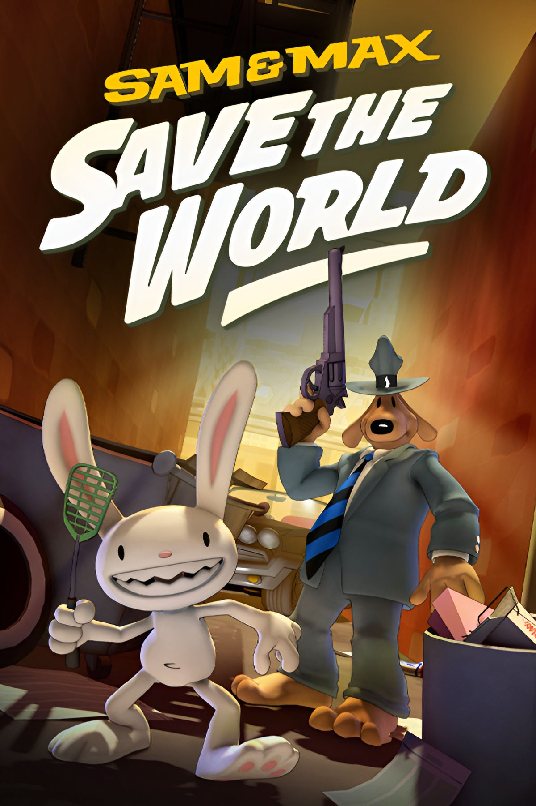
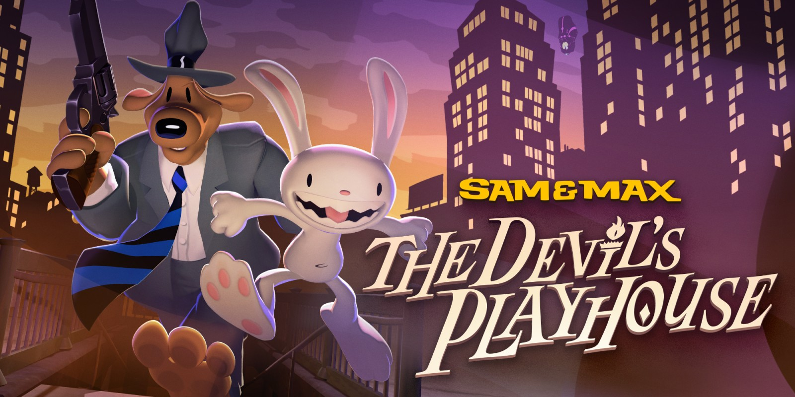
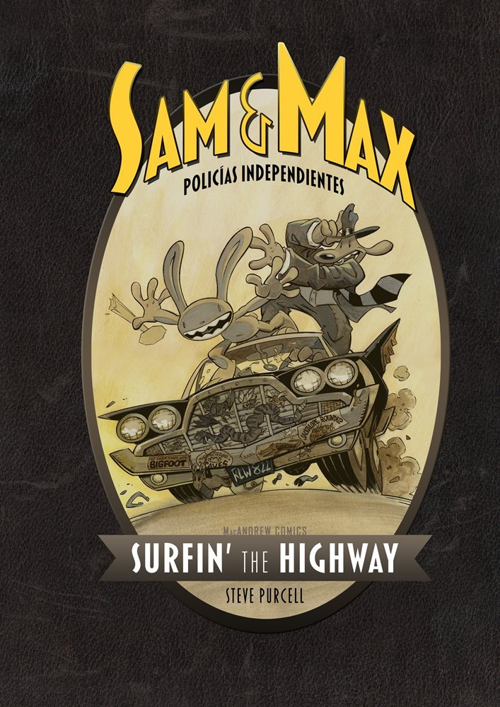
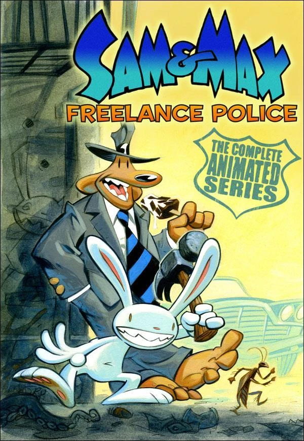
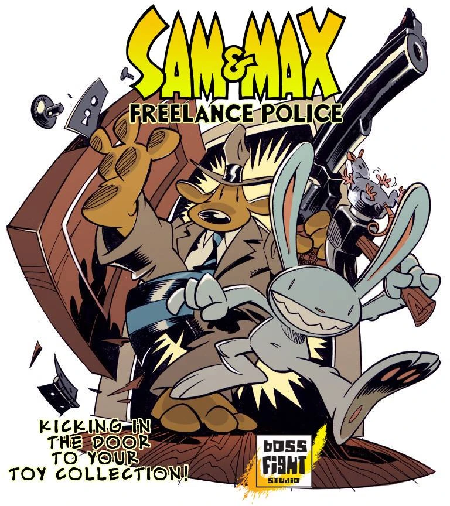

Conoce más sobre los videojuegos de Sam & Max.



Conoce más sobre los videojuegos de Sam & Max.

Conoce mas sobre los comics de sam y max.

Mira la galeria de Ilustraciones

Conoce la ficha de los personajes